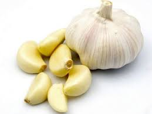

세계 10대 슈퍼푸드마늘(Garlic)일해백리(日害百利)는 마늘의 별명이다. 한가 |
 |
|
마늘 특유의 아린 맛은 알리신이라는 성분 때문으로, 살균 및 항균 작용 |
|
[외부링크]
토마토는 비타민 A, C가 풍부한 과일이다.채소다.
칼륨과 같은 각종 미네랄은 혈액의 산성도를 낮추는 역할을 해주며 혈압을 내리고 혈관을 튼튼하게 해준다. 토마토에 들어있는 피코펜이라는 성분은 뛰어난 항암 작용을 보이며 잘 알려져 있듯이 블루베리와 함께 대표적인 항산화 음식이기도 하다.